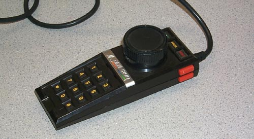

While Atari did officially release the standard X-Y Analog joystick for
the Atari 5200 and also released the Atari 5200 Trakball controller, there
was plenty of room for other alternative controllers.
A new self-centering joystick was being designed and also an arcade joystick
was in the works as well. However behind the scenes in Atari's
Consumer Electronics Division labs, one engineer took it upon himself to
design a simple, yet overlooked idea.... a 5200 Paddle controller.
Using nothing more then the potentiometer and plastic cap from a standard
Atari 2600 paddle controller and a resistor and some ABS plastic, Gary
Rubio (Staff Electrical Engineer) designed 20 Atari 5200 paddle controllers
for himself and others within Atari.
The controller made games like Super Breakout and Pole Position a dream
to play. The controller was never released for sale to
the public... but should have.